En este apartado de la asignatura veremos algunas de las técnicas para recuperar la información 3D de las escena.
La idea principal o la primera idea sobre este tema es que, con una imagen sola no basta para poder obtener la perspectiva de una escena y menos poder reconstruirla en 3D, ya que una imagen es solo una cara 2D de la realidad.
Con dos podemos encontrar una correspondencia y a partir de varias de estas reconstruir la imagen, se puede entender también como triangular el punto 3D.
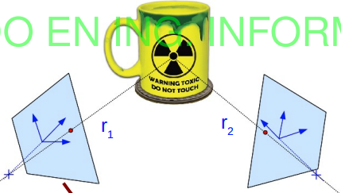
Esto en la práctica no siempre es eficiente ya que las rectas proyectivas de las vistas al punto 3D no siempre van a coincidir, debido al ruido debemos aproximar con la mayor precisión posible que las rectas proyectivas intersecten.
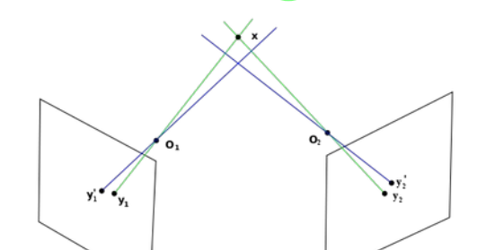
Epipolos:
Linea Epipolar:
Debido a que ambas cámaras forman un plano, si queremos encontrar un punto de una imagen en la otra estará su correspondencia en la linea epipolar, esto reduce la complejidad de la búsqueda de
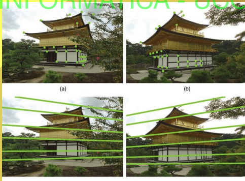
Plano Epipolar:
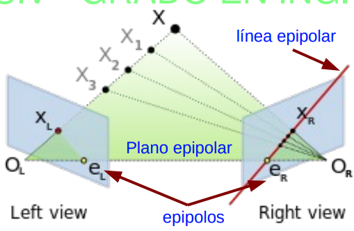
La visión estéreo es un método específico para la reconstrucción 3D que utiliza dos cámaras (o dos puntos de vista diferentes de una cámara) para simular cómo perciben la profundidad los humanos.
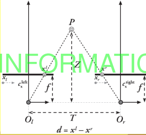
La disparidad es inversamente proporcional a la distancia, es decir a mayor distancia, menor disparidad y viceversa.
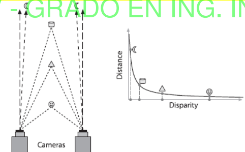
Uno de los principales desafíos en la visión estéreo es encontrar correspondencias exactas de puntos entre las dos imágenes.
Técnicas como el algoritmo de bloqueo, SAD (Suma de Diferencias Absolutas) o SIFT (Transformada Invariante de Escala) son algunas de las más comunes para este fin.
Horópteros y Rango de Disparidad:
El horóptero es un concepto en visión estereoscópica que se refiere al conjunto de puntos en el espacio que, al proyectarse en los dos ojos o en un sistema de cámaras estéreo, generan imágenes en la misma posición relativa en ambas retinas (o sensores de las cámaras) sin ninguna disparidad.
En otras palabras, los puntos en el horóptero tienen una disparidad cero.
Los puntos cercanos al horóptero, que presentan disparidades pequeñas (positivas o negativas) en función de la distancia con respecto al horóptero, caen dentro de este rango de disparidad.
Estos puntos están en un área conocida como el volumen de Panum en percepción humana, o simplemente el volumen de profundidad estéreo en visión artificial
Dentro del rango de disparidad, el sistema estéreo tiene una precisión aceptable para estimar la profundidad de los puntos.
A medida que un punto se aleja del horóptero, su disparidad aumenta, y la precisión en la estimación de profundidad disminuye. Esto se debe a la relación inversa entre disparidad y profundidad: mayores disparidades se asocian con distancias más cercanas al sistema de cámaras, mientras que menores disparidades representan puntos más lejanos.
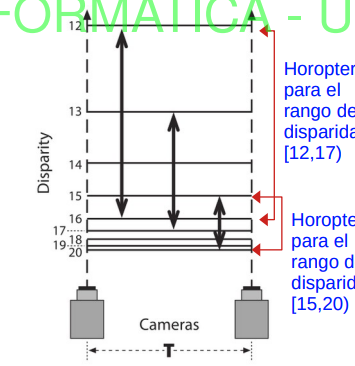
Ya sea por la luz o las condiciones que se tomaran las imágenes estas no podrán ser procesadas como si fuera en una situación ideal, también debido al ruido.
Es por eso que se hace un proceso de rectificación de la imagen para acercarla lo máximo posible a la situación ideal.
Se realiza el siguiente proceso:
El proceso de rectificación estéreo sigue generalmente estos pasos:
Calibración de las Cámaras:
Estimación de la Matriz de Rotación y Traslación:
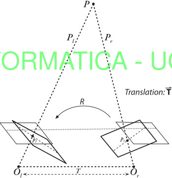
Cálculo de las Nuevas Matrices de Proyección:
Transformación de las Imágenes:
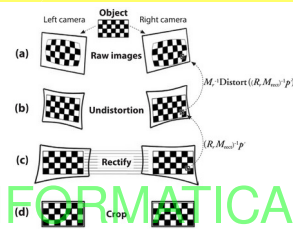
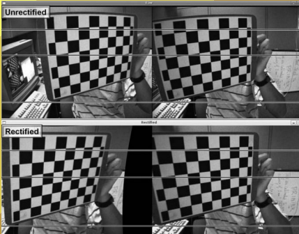
Uso del
También se usa para la correspondencia como antes mencione el SAD.
Lo que reduce la búsqueda de correspondencias a una dimensión.
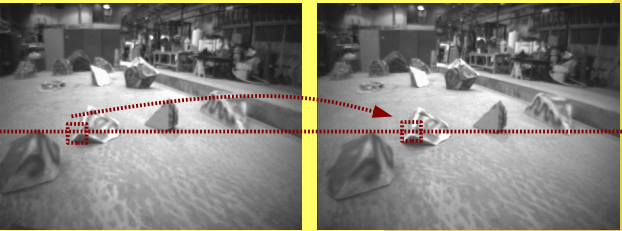
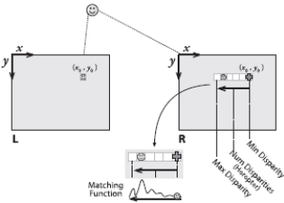
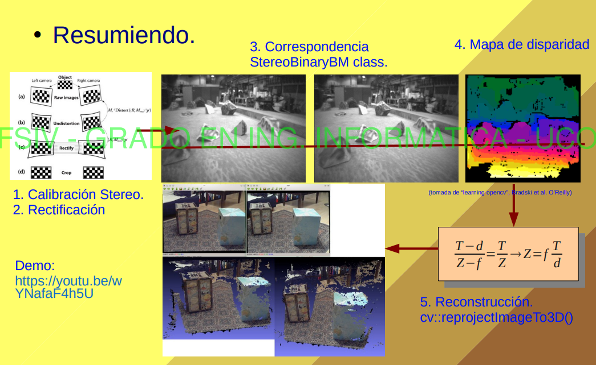